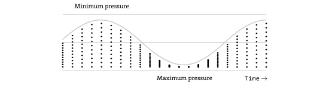
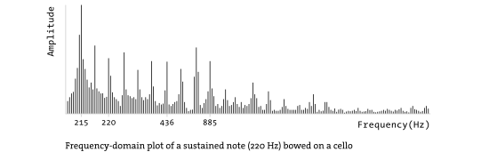

<table width="650">
	<tr>
	<td>

	<p class="license">
    	This tutorial is &#8220;Extension 3&#8221; from <em><a href="../../handbook">Processing: A Programming Handbook for Visual Designers and Artists, Second Edition</a></em>, published by MIT Press. &copy; 2014 MIT Press. If you see any errors or have comments, please <a href="https://github.com/processing/processing-docs/issues?state=open">let us know</a>.
    </p>


	<h1 style="line-height: 0.7em;">Sound</h1>
	<h3 style="line-height: 0.7em;"><em>R. Luke DuBois and Wilm Thoben</em></h3>


	<p class="txt">
		The history of music is, in many ways, the history of technology. From developments in the writing and transcription of music (notation) to the design of spaces for the performance of music (acoustics) to the creation of musical instruments, composers and musicians have availed themselves of advances in human understanding to perfect and advance their professions. Unsurprisingly, therefore, we find that in the machine age these same people found themselves first in line to take advantage of the new techniques and possibilities offered by electricity, telecommunications, and, in the last century, digital computers to leverage all of these systems to create new and expressive forms of sonic art. Indeed, the development of phonography (the ability to reproduce sound mechanically) has, by itself, had such a transformative effect on aural culture that it seems inconceivable now to step back to an age where sound could emanate only from its original source.<sup>1</sup> The ability to create, manipulate, and reproduce lossless sound by digital means is having, at the time of this writing, an equally revolutionary effect on how we listen. As a result, the artist today working with sound has not only a huge array of tools to work with, but also a medium exceptionally well suited to technological experimentation.
	</p>
 
	<h3>Music and sound programming in the arts</h3>
	
	<p class="txt">
		Thomas Edison&#8217;s 1857 invention of the phonograph and Nikola Tesla&#8217;s wireless radio demonstration of 1893 paved the way for what was to be a century of innovation in the electromechanical transmission and reproduction of sound. Emile Berliner&#8217;s gramophone record (1887) and the advent of AM radio broadcasting under Guglielmo Marconi (1922) democratized and popularized the consumption of music, initiating a process by which popular music quickly transformed from an art of minstrelsy into a commodified industry worth tens of billions of dollars worldwide.<sup>2</sup> New electronic musical instruments, from the large and impractical telharmonium to the simple and elegant theremin multiplied in tandem with recording and broadcast technologies and prefigured the synthesizers, sequencers, and samplers of today. Many composers of the time were, not unreasonably, entranced by the potential of these new mediums of transcription, transmission, and performance. Luigi Russolo, the futurist composer, wrote in his 1913 manifesto <em>The Art of Noises</em> of a futurist orchestra harnessing the power of mechanical noisemaking (and phonographic reproduction) to &#8220;liberate&#8221; sound from the tyranny of the merely musical. John Cage, in his 1937 monograph <em>Credo: The Future of Music</em>, wrote this elliptical doctrine:</p>
    	
    	<blockquote>
			The use of noise to make music will continue and increase until we reach a music produced through the aid of electrical instruments which will make available for musical purposes any and all sounds that can be heard. Photoelectric, film, and mechanical mediums for the synthetic production of music will be explored. Whereas, in the past, the point of disagreement has been between dissonance and consonance, it will be, in the immediate future, between noise and so-called musical sounds.<sup>3</sup>
		</blockquote>
		
	<p class="txt">
		The invention and wide adoption of magnetic tape as a medium for the recording of audio signals provided a breakthrough for composers waiting to compose purely with <em>sound</em>. In the early postwar period, the first electronic music studios flourished at radio stations in Paris (ORTF) and Cologne (WDR). The composers at the Paris studio, most notably Pierre Henry and Pierre Schaeffer, developed the early compositional technique of <em>musique concrète</em>, working directly with recordings of sound on phonographs and magnetic tape to construct compositions through a process akin to what we would now recognize as sampling. Schaeffer&#8217;s <em>Étude aux chemins de fer</em> (1948) and Henry and Schaeffer&#8217;s <em>Symphonie pour un homme seul</em> are classics of the genre. Meanwhile, in Cologne, composers such as Herbert Eimart and Karlheinz Stockhausen were investigating the use of electromechanical oscillators to produce pure sound waves that could be mixed and sequenced with a high degree of precision. This classic <em>elektronische music</em> was closely tied to the serial techniques of the contemporary modernist avant-garde, who were particularly well suited aesthetically to become crucial advocates for the formal quantification and automation offered by electronic and, later, computer music.<sup>4</sup> The Columbia-Princeton Electronic Music Center, founded by Vladimir Ussachevsky, Otto Luening, Milton Babbitt, and Roger Sessions in New York in 1957, staked its reputation on the massive RCA Mark II Sound Synthesizer, a room-sized machine capable of producing and sequencing electronically generated tones with an unprecedented degree of precision and control. In the realm of popular music, pioneering steps were taken in the field of recording engineering, such as the invention of multitrack tape recording by the guitarist Les Paul in 1954. This technology, enabling a single performer to &#8220;overdub&#8221; her/himself onto multiple individual &#8220;tracks&#8221; that could later be mixed into a composite, filled a crucial gap in the technology of recording and would empower the incredible boom in recording-studio experimentation that permanently cemented the commercial viability of the studio recording in popular music.
    </p>

    <p class="txt">
		Composers adopted digital computers slowly as a creative tool because of their initial lack of real-time responsiveness and intuitive interface. Although the first documented use of the computer to make music occurred in 1951 on the CSIRAC machine in Sydney, Australia, the genesis of most foundational technology in computer music as we know it today came when Max Mathews, a researcher at Bell Labs in the United States, developed a piece of software for the IBM 704 mainframe called MUSIC. In 1957, the MUSIC program rendered a 17-second composition by Newmann Guttmann called &#8220;In the Silver Scale&#8221;. Originally tasked with the development of human-comprehensible synthesized speech, Mathews developed a system for encoding and decoding sound waves digitally, as well as a system for designing and implementing digital audio processes computationally. His assumptions about these representational schemes are still largely in use and will be described later in this text. The advent of faster machines, computer music programming languages, and digital systems capable of real-time interactivity brought about a rapid transition from analog to computer technology for the creation and manipulation of sound, a process that by the 1990s was largely comprehensive.<sup>5</sup>
	</p>

	<p class="txt">
		Sound programmers (composers, sound artists, etc.) use computers for a variety of tasks in the creative process. Many artists use the computer as a tool for the algorithmic and computer-assisted composition of music that is then realized off-line. For Lejaren Hiller&#8217;s <em>Illiac Suite</em> for string quartet (1957), the composer ran an algorithm on the computer to generate notated instructions for live musicians to read and perform, much like any other piece of notated music. This computational approach to composition dovetails nicely with the aesthetic trends of twentieth-century musical modernism, including the controversial notion of the composer as &#8220;researcher,&#8221; best articulated by serialists such as Milton Babbitt and Pierre Boulez, the founder of IRCAM. This use of the computer to manipulate the symbolic language of music has proven indispensable to many artists, some of whom have successfully adopted techniques from computational research in artificial intelligence to attempt the modeling of preexisting musical styles and forms; for example, David Cope&#8217;s <em>5000 works...</em> and Brad Garton&#8217;s <em>Rough Raga Riffs</em> use stochastic techniques from information theory such as Markov chains to simulate the music of J. S. Bach and the styles of Indian Carnatic sitar music, respectively. 
	</p>

	<p class="txt">
		If music can be thought of as a set of informatics to describe an organization of sound, the synthesis and manipulation of sound itself is the second category in which artists can exploit the power of computational systems. The use of the computer as a producer of synthesized sound liberates the artist from preconceived notions of instrumental capabilities and allows her/him to focus directly on the timbre of the sonic artifact, leading to the trope that computers allow us to make any sound we can imagine. Composers such as Jean-Claude Risset (<em>The Bell Labs Catalogue</em>), Iannis Xenakis (<em>GENDYN3</em>), and Barry Truax (<em>Riverrun</em>), have seen the computer as a crucial tool in investigating sound itself for compositional possibilities, be they imitative of real instruments (Risset), or formal studies in the stochastic arrangements of synthesized sound masses (Xenakis) using techniques culminating in the principles of granular synthesis (Truax). The computer also offers extensive possibilities for the assembly and manipulation of preexisting sound along the musique concrète model, though with all the alternatives a digital computer can offer. The compositional process of digital sampling, whether used in pop recordings (Brian Eno and David Byrne&#8217;s <em>My Life in the Bush of Ghosts</em>, Public Enemy&#8217;s <em>Fear of a Black Planet</em>) or conceptual compositions (John Oswald&#8217;s <em>Plunderphonics</em>, Chris Bailey&#8217;s <em>Ow, My Head</em>), is aided tremendously by the digital form sound can now take. Computers also enable the transcoding of an audio signal into representations that allow for radical reinvestigation, as in the time-stretching works of Leif Inge (<em>9 Beet Stretch</em>, a 24-hour &#8220;stretching&#8221; of Beethoven&#8217;s <em>Ninth Symphony</em>) and the time-lapse phonography of this text&#8217;s author (<em>Messiah</em>, a 5-minute &#8220;compression&#8221; of Handel&#8217;s <em>Messiah</em>).
	</p>

	<p class="txt">
		Artists working with sound will often combine the two approaches, allowing for the creation of generative works of sound art where the underlying structural system, as well as the sound generation and delivery, are computationally determined. Artists such as Michael Schumacher, Stephen Vitiello, Carl Stone, and Richard James (the Aphex Twin) all use this approach. Most excitingly, computers offer immense possibilities as actors and interactive agents in sonic performance, allowing performers to integrate algorithmic accompaniment (George Lewis), hyperinstrument design (Laetitia Sonami, Interface), and digital effects processing (Pauline Oliveros, Mari Kimura) into their repertoire.
	</p>

	<p class="txt">
		Now that we&#8217;ve talked a bit about the potential for sonic arts on the computer, we&#8217;ll investigate some of the specific underlying technologies that enable us to work with sound in the digital domain.
	</p>


	<h3>Sound and musical informatics</h3>
	
	<p class="txt">
		Simply put, we define sound as a vibration traveling through a medium (typically air) that we can perceive through our sense of hearing. Sound propagates as a longitudinal wave that alternately compresses and decompresses the molecules in the matter (e.g., air) through which it travels. As a result, we typically represent sound as a plot of pressure over time:
	</p>

	<!-- [Diagram 56-1] -->
	

	<p class="txt">
		This time-domain representation of sound provides an accurate portrayal of how sound works in the real world, and, as we shall see shortly, it is the most common representation of sound used in work with digitized audio. When we attempt a technical description of a sound wave, we can easily derive a few metrics to help us better understand what&#8217;s going on. In the first instance, by looking at the amount of displacement caused by the sound pressure wave, we can measure the amplitude of the sound. This can be measured on a scientific scale in <em>pascals</em> of pressure, but it is more typically quantified along a logarithmic scale of <em>decibels</em>. If the sound pressure wave repeats in a regular or <em>periodic</em> pattern, we can look at the wavelength of a single iteration of that pattern and from there derive the frequency of that wave. For example, if a sound traveling in a medium at 343 meters per second (the speed of sound in air at room temperature) contains a wave that repeats every half-meter, that sound has a frequency of 686 hertz, or cycles per second. The figure below shows a plot of a cello note sounding at 440 Hz; as a result, the periodic pattern of the waveform (demarcated with vertical lines) repeats every 2.27 ms:
	</p>

	<!-- [Diagram 56-2] -->
	

	<p class="txt">
		Typically, sounds occurring in the natural world contain many discrete frequency components. In noisy sounds, these frequencies may be completely unrelated to one another or grouped by a typology of boundaries (e.g., a snare drum may produce frequencies randomly spread between 200 and 800 hertz). In <em>harmonic</em> sounds, however, these frequencies are often spaced in integer ratios, such that a cello playing a note at 200 hertz will produce frequencies not only at the <em>fundamental</em> of 200, but at multiples of 200 up the <em>harmonic series</em>, i.e., at 400, 800, 1200, 1600, 2000, and so on. A male singer producing the same note will have the same frequency components in his voice, though in different proportions to the cello. The presence, absence, and relative strength of these harmonics (also called <em>partials</em> or <em>overtones</em>) provide what we perceive as the timbre of a sound.
	</p>

	<p class="txt">
		When a sound reaches our ears, an important sensory translation happens that is important to understand when working with audio. Just as light of different wavelengths and brightness excites different retinal receptors in your eyes to produce a color image, the cochlea of your inner ear contains an array of hair cells on the basilar membrane that are tuned to respond to different frequencies of sound. The inner ear contains hair cells that respond to frequencies spaced roughly between 20 and 20,000 hertz, though many of these hairs will gradually become desensitized with age or exposure to loud noise. These cells in turn send electrical signals via your auditory nerve into the auditory cortex of your brain, where they are parsed to create a frequency-domain image of the sound arriving in your ears:
	</p>

	<!-- [Diagram 56-3] -->
	

	<p class="txt">
		This representation of sound, as a discrete &#8220;frame&#8221; of frequencies and amplitudes independent of time, is more akin to the way in which we perceive our sonic environment than the raw pressure wave of the time domain. Jean-Baptiste-Joseph Fourier, a nineteenth-century French mathematician, developed the equations that allow us to translate a sound pressure wave (no matter how complex) into its constituent frequencies and amplitudes. This <em>Fourier transform</em> is an important tool in working with sound in the computer.
	</p>

	<p class="txt">
		Our auditory system takes these streams of frequency and amplitude information from our two ears and uses them to construct an auditory &#8220;scene,&#8221; akin to the visual scene derived from the light reaching our retinas.6 Our brain analyzes the acoustic information based on a number of parameters such as onset time, stereo correlation, harmonic ratio, and complexity to parse out a number of acoustic sources that are then placed in a three-dimensional image representing what we hear. Many of the parameters that psychoacousticians believe we use to comprehend our sonic environment are similar to the grouping principles defined in Gestalt psychology.
	</p>

	<p class="txt">
		If we loosely define music as the organization and performance of sound, a new set of metrics reveals itself. While a comprehensive overview of music theory, Western or otherwise, is well beyond the scope of this text, it&#8217;s worth noting that there is a vocabulary for the description of music, akin to how we describe sound. Our system for perceiving <em>loudness</em> and <em>pitch</em> (useful &#8220;musical&#8221; equivalents to amplitude and frequency) work along a logarithmic scale, such that a tone at 100 hertz and a tone at 200 hertz are considered to be the same <em>distance</em> apart in terms of pitch as tones at 2000 and 4000 hertz. The distance between two sounds of doubling frequency is called the octave, and is a foundational principle upon which most culturally evolved theories of music rely. Most musical cultures then subdivide the octave into a set of pitches (e.g., 12 in the Western chromatic scale, 7 in the Indonesian <em>pelog</em> scale) that are then used in various collections (<em>modes</em> or <em>keys</em>). These pitches typically reflect some system of <em>temperament</em> or <em>tuning</em>, so that multiple musicians can play together; for example, the note A4 (the A above middle C) on the Western scale is usually calibrated to sound at 440 hertz in contemporary music.
	</p>


	<h3>Digital representation of sound and music</h3>

	<p class="txt">
		Sound typically enters the computer from the outside world (and vice versa) according to the time-domain representation explained earlier. Before it is digitized, the acoustic pressure wave of sound is first converted into an electromagnetic wave of sound that is a direct analog of the acoustic wave. This electrical signal is then fed to a piece of computer hardware called an analog-to-digital converter (ADC or A/D), which then digitizes the sound by sampling the amplitude of the pressure wave at a regular interval and quantifying the pressure readings numerically, passing them upstream in small packets, or vectors, to the main processor, where they can be stored or processed. Similarly, vectors of digital samples can be sent downstream from the computer to a hardware device called a digital-to-analog converter (DAC or D/A), which takes the numeric values and uses them to construct a smoothed-out electromagnetic pressure wave that can then be fed to a speaker or other device for playback:
	</p>

	<!-- [Diagram 56-4] -->
	

	<p class="txt">
		Most contemporary digital audio systems (soundcards, etc.) contain both A/D and D/A converters (often more than one of each, for stereo or multichannel sound recording and playback) and can use both simultaneously (so-called full duplex audio). The specific system of encoding and decoding audio using this methodology is called PCM (or pulse-code modulation); developed in 1937 by Alec Reeves, it is by far the most prevalent scheme in use today. 
	</p>

	<p class="txt">
		The speed at which audio signals are digitized is referred to as the sampling rate; it is the resolution that determines the highest frequency of sound that can be measured (equal to half the sampling rate, according to the <em>Nyquist theorem</em>). The numeric resolution of each sample in terms of computer storage space is called the <em>bit depth</em>; this value determines how many discrete levels of amplitude can be described by the digitized signal. The digital audio on a compact disc, for example, is digitized at 44,100 hertz with a 16-bit resolution, allowing for frequencies up to 22,050 hertz (i.e., just above the range of human hearing) with 65,536 (216) different levels of amplitude possible for each sample. Professional audio systems will go higher (96 or 192 kHz at 24- or 32-bit resolution) while industry telephony systems will go lower (e.g., 8,192 Hz at 8-bit). Digitized sound representing multiple acoustic sources (e.g., instruments) or destinations (e.g., speakers) is referred to as multi-channel audio. Monaural sound consists of, naturally, only one stream; stereo (two-stream) audio is standard on all contemporary computer audio hardware, and various types of surround-sound (five or seven streams of audio with one or two special channels for low frequencies) are becoming more and more common.
	</p>

	<p class="txt">
		Once in the computer, sound is stored using a variety of formats, both as sequences of PCM samples and in other representations. The two most common PCM sound file formats are the Audio Interchange File Format (AIFF) developed by Apple Computer and Electronic Arts and the WAV file format developed by Microsoft and IBM. Both formats are effectively equivalent in terms of quality and interoperability, and both are inherently <em>lossless</em> formats, containing the uncompressed PCM data from the digitized source. In recent years, compressed audio file formats have received a great deal of attention, most notably the MP3 (MPEG-1 Audio Layer 3), the Vorbis codec, and the Advanced Audio Coding (AAC) codec. Many of these &#8220;lossy&#8221; audio formats translate the sound into the frequency domain (using the Fourier transform or a related technique called Linear Predictive Coding) to package the sound in a way that allows compression choices to be made based on the human hearing model, by discarding perceptually irrelevant frequencies in the sound. Unlike the PCM formats outlined above, MP3 files are much harder to encode, manipulate, and process in real time, due to the extra step required to decompress and compress the audio into and out of the time domain.
	</p>


	<h3>Synthesis</h3>

	<p class="txt">
		Digital audio systems typically perform a variety of tasks by running processes in <em>signal processing networks</em>. Each node in the network typically performs a simple task that either generates or processes an audio signal. Most software for generating and manipulating sound on the computer follows this paradigm, originally outlined by Max Mathews as the <em>unit generator</em> model of computer music, where a map or function graph of a signal processing chain is executed for every sample (or vector of samples) passing through the system. A simple algorithm for synthesizing sound with a computer could be implemented using this paradigm with only three unit generators, described as follows.
	</p>

	<p class="txt">
		First, let&#8217;s assume we have a unit generator that generates a repeating sound waveform and has a controllable parameter for the frequency at which it repeats. We refer to this piece of code as an oscillator. Most typical digital oscillators work by playing back small tables or arrays of PCM audio data that outlines a specific waveform. These <em>wavetables</em> can contain incredibly simple patterns (e.g., a sine or square wave) or complex patterns from the outside world (e.g., a professionally recorded segment of a piano playing a single note). 
	</p>

	<p class="txt">
		If we play our oscillator directly (i.e., set its frequency to an audible value and route it directly to the D/A) we will hear a constant tone as the wavetable repeats over and over again. In order to attain a more nuanced and articulate sound, we may want to vary the volume of the oscillator over time so that it remains silent until we want a sound to occur. The oscillator will then increase in volume so that we can hear it. When we want the sound to silence again, we fade the oscillator down. Rather than rewriting the oscillator itself to accommodate instructions for volume control, we could design a second unit generator that takes a list of time and amplitude instructions and uses those to generate a so-called <em>envelope</em>, or ramp that changes over time. Our <em>envelope generator</em> generates an audio signal in the range of 0 to 1, though the sound from it is never experienced directly. Our third unit generator simply multiplies, sample per sample, the output of our oscillator with the output of our envelope generator. This <em>amplifier</em>code allows us to use our envelope ramp to dynamically change the volume of the oscillator, allowing the sound to fade in and out as we like.
	</p>

	<p class="txt">
		In a commercial synthesizer, further algorithms could be inserted into the signal network—for example, a filter that could shape the frequency content of the oscillator before it gets to the amplifier. Many synthesis algorithms depend on more than one oscillator, either in parallel (e.g., additive synthesis, in which you create a rich sound by adding many simple waveforms) or through <em>modulation</em> (e.g., frequency modulation, where one oscillator modulates the pitch of another).
	</p>


	<h3>Sampling</h3>

	<p class="txt">
		Rather than using a small waveform in computer memory as an oscillator, we could use a longer piece of recorded audio stored as an AIFF or WAV file on our computer&#8217;s hard disk. This <em>sample</em> could then be played back at varying rates, affecting its pitch. For example, playing back a sound at twice the speed at which it was recorded will result in its rising in pitch by an octave. Similarly, playing a sound at half speed will cause it to drop in pitch by an octave.
	</p>

	<p class="txt">
		Most samplers (i.e., musical instruments based on playing back audio recordings as sound sources) work by assuming that a recording has a <em>base frequency</em> that, though often linked to the real pitch of an instrument in the recording, is ultimately arbitrary and simply signifies the frequency at which the sampler will play back the recording at normal speed. For example, if we record a cellist playing a sound at 220 hertz (the musical note A below middle C in the Western scale), we would want that recording to play back normally when we ask our sampler to play us a sound at 220 hertz. If we ask our sampler for a sound at a different frequency, our sampler will divide the requested frequency by the base frequency and use that ratio to determine the playback speed of the sampler. For example, if we want to hear a 440 hertz sound from our cello sample, we play it back at double speed. If we want to hear a sound at middle C (261.62558 hertz), we play back our sample at 1.189207136 times the original speed.
	</p>

	<p class="txt">
		Many samplers use recordings that have meta-data associated with them to help give the sampler algorithm information that it needs to play back the sound correctly. The base frequency is often one of these pieces of information, as are <em>loop points</em> within the recording that the sampler can safely use to make the sound repeat for longer than the length of the original recording. For example, an orchestral string sample loaded into a commercial sampler may last for only a few seconds, but a record producer or keyboard player may need the sound to last much longer; in this case, the recording is designed so that in the middle of the recording there is a region that can be safely repeated, ad infinitum if need be, to create a sense of a much longer recording.
	</p>


	<h3>Effects processing</h3>

	<p class="txt">
		In addition to serving as a generator of sound, computers are used increasingly as machines for <em>processing</em> audio. The field of digital audio processing (DAP) is one of the most extensive areas for research in both the academic computer music communities and the commercial music industry. Faster computing speeds and the increased standardization of digital audio processing systems has allowed most techniques for sound processing to happen in real time, either using software algorithms or audio DSP coprocessors such as the Digidesign TDM and T|C Electronics Powercore cards.
	</p>

	<p class="txt">
		As we saw with audio representation, audio effects processing is typically done using either time- or frequency-domain algorithms that process a stream of audio vectors. An echo effect, for example, can be easily implemented by creating a buffer of sample memory to delay a sound and play it back later, mixing it in with the original. Extremely short delays (of one or two samples) can be used to implement digital filters, which attenuate or boost different frequency ranges in the sound. Slightly longer delays create resonation points called <em>comb filters</em> that form an important building block in simulating the short echoes in room reverberation. A variable-delay comb filter creates the resonant swooshing effect called <em>flanging</em>. Longer delays are used to create a variety of echo, reverberation, and looping systems and can also be used to create <em>pitch shifters</em> (by varying the playback speed of a slightly delayed sound).
	</p>


	<h3>Audio analysis</h3>

	<p class="txt">
		A final important area of research, especially in interactive sound environments, is the derivation of information from audio analysis. Speech recognition is perhaps the most obvious application of this, and a variety of paradigms for recognizing speech exist today, largely divided between &#8220;trained&#8221; systems (which accept a wide vocabulary from a single user) and &#8220;untrained&#8221; systems (which attempt to understand a small set of words spoken by anyone). Many of the tools implemented in speech recognition systems can be abstracted to derive a wealth of information from virtually any sound source.
	</p>

	<p class="txt">
		Interactive systems that &#8220;listen&#8221; to an audio input typically use a few simple techniques to abstract a complex sound source into a control source that can be mapped as a parameter in interaction design. For example, a plot of average amplitude of an audio signal over time can be used to modulate a variable continuously through a technique called <em>envelope following</em>. Similarly, a threshold of amplitude can be set to trigger an event when the sound reaches a certain level; this technique of <em>attack detection</em> (&#8220;attack&#8221; is a common term for the onset of a sound) can be used, for example, to create a visual action synchronized with percussive sounds coming into the computer.
	</p>

	<p class="txt">
		The technique of pitch tracking, which uses a variety of analysis techniques to attempt to discern the fundamental frequency of an input sound that is reasonably harmonic, is often used in interactive computer music to track a musician in real time, comparing her/his notes against a &#8220;score&#8221; in the computer&#8217;s memory. This technology of score-following can be used to sequence interactive events in a computer program without having to rely on absolute timing information, allowing musicians to deviate from a strict tempo, improvise, or otherwise inject a more fluid musicianship into a performance.
	</p>

	<p class="txt">
		A wide variety of timbral analysis tools also exist to transform an audio signal into data that can be mapped to computer-mediated interactive events. Simple algorithms such as <em>zero-crossing counters</em>, which tabulate the number of times a time-domain audio signal crosses from positive to negative polarity, can be used to derive the amount of noise in an audio signal. Fourier analysis can also be used to find, for example, the five loudest frequency components in a sound, allowing the sound to be examined for harmonicity or timbral brightness. Filter banks and envelope followers can be combined to split a sound into overlapping frequency ranges that can then be used to drive another process. This technique is used in a common piece of effects hardware called the <em>vocoder</em>, in which a harmonic signal (such as a synthesizer) has different frequency ranges boosted or attenuated by a noisy signal (usually speech). The effect is that of one sound &#8220;talking&#8221; through another sound; it is among a family of techniques called cross-synthesis.
	</p>


	<h3>Music as information</h3>

	<p class="txt">
		Digital representations of music, as opposed to sound, vary widely in scope and character. By far the most common system for representing real-time musical performance data is the Musical Instrument Digital Interface (MIDI) specification, released in 1983 by a consortium of synthesizer manufacturers to encourage interoperability between different brands of digital music equipment. Based on a unidirectional, low-speed serial specification, MIDI represents different categories of musical events (notes, continuous changes, tempo and synchronization information) as abstract numerical values, nearly always with a 7-bit (0–127) numeric resolution.
	</p>

	<p class="txt">
		Over the years, the increasing complexity of synthesizers and computer music systems began to draw attention to the drawbacks of the simple MIDI specification. In particular, the lack of support for the fast transmission of digital audio and high-precision, syntactic synthesizer control specifications along the same cable led to a number of alternative systems. Open Sound Control, developed by a research team at the University of California, Berkeley, makes the interesting assumption that the recording studio (or computer music studio) of the future will use standard network interfaces (Ethernet or wireless TCP/IP communication) as the medium for communication. OSC allows a client-server model of communication between controllers (keyboards, touch screens) and digital audio devices (synthesizers, effects processors, or general-purpose computers), all through UDP packets transmitted on the network.
	</p>


	<h3>Tools for sound programming</h3>

	<p class="txt">
		A wide variety of tools are available to the digital artist working with sound. Sound recording, editing, mixing, and playback are typically accomplished through digital sound editors and so-called digital audio workstation (DAW) environments. Sound editors range from open source and free software (Ardour, Audacity) to professional-level studio or live programs (Ableton Live, Logic Pro, Digital Performer, Nuendo, Pro Tools). These programs typically allow you to import and record sounds, edit them with clipboard functionality (copy, paste, etc.), and perform a variety of simple digital sound processing (DSP) tasks nondestructively on the sound file itself, such as signal normalization, fading edits, and sample-rate conversion. Often these programs will act as hosts for software plug-ins originally designed for working inside of DAW software.
	</p>

	<p class="txt">
		Digital audio workstation suites offer a full range of multitrack recording, playback, processing, and mixing tools, allowing for the production of large-scale, highly layered projects. DAW software is now considered standard in the music recording and production industry. The Avid/Digidesign Pro Tools software, considered the industry standard, allows for the recording and mixing of many tracks of audio in real time along a timeline roughly similar to that in a video NLE (nonlinear editing) environment. Automation curves can be drawn to specify different parameters (volume, pan) of these tracks, which contain clips of audio (&#8220;regions&#8221; or &#8220;soundbites&#8221;) that can be assembled and edited nondestructively. Other DAW software applications on the market are Apple&#8217;s Logic Audio, Mark of the Unicorn&#8217;s Digital Performer or Steinberg&#8217;s. All of these platforms also support third-party audio plug-ins written in a variety of formats, such as Apple&#8217;s AudioUnits (AU), Steinberg&#8217;s Virtual Studio Technology (VST), or Microsoft&#8217;s DirectX format. Most DAW programs also include extensive support for MIDI, allowing the package to control and sequence external synthesizers, samplers, and drum machines; as well as software plug-in &#8220;instruments&#8221; that run inside the DAW itself as sound generators. In 2001, Ableton introduced a revolutionary DAW software called LIVE. This software is not only directed to studio work with the metaphor of tape machines but is directed to live performance and revitalized the cue list idiom. Users can switch to the LIVE view which is a non-linear, modular based view of musical material organized in lists. 
	</p>

	<p class="txt">
		Classic computer music &#8220;languages,&#8221; most of which are derived from Max Mathews&#8217; MUSIC program, are still in wide use today. Some of these, such as CSound (developed by Barry Vercoe at MIT) have wide followings and are taught in computer music studios as standard tools for electroacoustic composition. The majority of these MUSIC-N programs use text files for input, though they are increasingly available with graphical editors for many tasks. Typically, two text files are used; the first contains a description of the sound to be generated using a specification language that defines one or more &#8220;instruments&#8221; made by combining simple unit generators. A second file contains the &#8220;score,&#8221; a list of instructions specifying which instrument in the first file plays what event, when, for how long, and with what variable parameters. Most of these programs go beyond simple task-based synthesis and audio processing to facilitate algorithmic composition, often by building on top of a standard programming language; Bill Schottstaedt &#8217;s CLM package, for example, is built on top of Common LISP. Some of these languages have been retrofitted in recent years to work in real time (as opposed to rendering a sound file to disk); Real-Time Cmix, for example, contains a C-style parser as well as support for connectivity from clients over network sockets and MIDI.
	</p>

	<p class="txt">
		A number of computer music environments were begun with the premise of real-time interaction as a foundational principle of the system. The Max development environment for real-time media, first developed at IRCAM in the 1980s and currently developed by Cycling&#8217;74, is a visual programming system based on a control graph of &#8220;objects&#8221; that execute and pass messages to one another in real time. The MSP extensions to Max allow for the design of customizable synthesis and signal-processing systems, all of which run in real time. The open-source older sibling to Max called Pure Data was developed by the original author of Max, Miller Puckette. James McCartney&#8217;s SuperCollider program, which is open source, and Ge Wang and Perry Cook&#8217;s ChucK software are both textual languages designed to execute real-time interactive sound algorithms.
	</p>

	<p class="txt">
		Finally, standard computer languages have a variety of APIs to choose from when working with sound. Phil Burke&#8217;s JSyn (Java Synthesis) provides a unit generator-based API for doing real-time sound synthesis and processing in Java. The CCRMA Synthesis ToolKit (STK) is a C++ library of routines aimed at low-level synthesizer design and centered on physical modeling synthesis technology. 
	</p>

	<p class="txt">
		Sound, a library for Processing that has many features in common with the above-mentioned languages, is used in the examples for this text.
	</p>


	<hr />

	<h3>Example 1, 2:  Synthesizer</h3>

	<p class="txt">
		These examples show two basic methods for synthesizing sound. In the first, a cluster of sound is created through adding up five sine-waves. To calculate the correct amplitude for each sine wave an array with float numbers corresponding to each oscillator&#8217;s amplitude is filled. First, the maximum amplitude of 1.0 is divided by the number of oscillators to avoid exceeding the overall maximum amplitude. The amplitude is then decreased by the factor 1 / (i + 1) which results in higher frequencies being quieter than lower frequencies. The frequency for each oscillator is calculated in the draw() function. Based on a variable fundamental frequency between 150 and 1150 Hz the next harmonic overtones are calculated by multiplying the frequency with a series of integer numbers from 1-5. A detune factor with the range -0.5 to 0.5 is then applied to deviate from a purely harmonic spectrum into an inharmonic cluster.
	</p>

	<p class="txt">
		In the second example, envelope functions are used to create event based sounds like notes on an instrument. Sound provides ASR (attack / sustain / release) envelopes. An envelope describes the course of the amplitude over time. With an ASR envelope one can define an attack phase, a sustain and a release phase in seconds. After creating the envelope an oscillator can be directly passed to the function. In this case an array of midi notes is translated into frequencies by the midiToFreq() function. To sequence the succession of notes we create a trigger with the current time and a duration between the notes. 
	</p>


	<pre>
/**
 * Processing Sound Library, Example 1
 * 
 * Five sine waves are layered to construct a cluster of frequencies. 
 * This method is called additive synthesis. Use the mouse position 
 * inside the display window to detune the cluster.
 */

import processing.sound.*;

SinOsc[] sineWaves; // Array of sines
float[] sineFreq; // Array of frequencies
int numSines = 5; // Number of oscillators to use

void setup() {  
  size(640, 360);
  background(255);

  sineWaves = new SinOsc[numSines]; // Initialize the oscillators
  sineFreq = new float[numSines]; // Initialize array for Frequencies

  for (int i = 0; i < numSines; i++) {
    // Calculate the amplitude for each oscillator
    float sineVolume = (1.0 / numSines) / (i + 1);
    // Create the oscillators
    sineWaves[i] = new SinOsc(this);
    // Start Oscillators
    sineWaves[i].play();
    // Set the amplitudes for all oscillators
    sineWaves[i].amp(sineVolume);
  }
}

void draw() {
  //Map mouseY from 0 to 1
  float yoffset = map(mouseY, 0, height, 0, 1);
  //Map mouseY logarithmically to 150 - 1150 to create a base frequency range
  float frequency = pow(1000, yoffset) + 150;
  //Use mouseX mapped from -0.5 to 0.5 as a detune argument
  float detune = map(mouseX, 0, width, -0.5, 0.5);

  for (int i = 0; i < numSines; i++) { 
    sineFreq[i] = frequency * (i + 1 * detune);
    // Set the frequencies for all oscillators
    sineWaves[i].freq(sineFreq[i]);
  }
}
	</pre>

	<hr />

	<pre>
/**
 * Processing Sound Library, Example 2
 * 
 * This sketch shows how to use envelopes and oscillators. 
 * Envelopes describe to course of amplitude over time. 
 * The Sound library provides an ASR envelope which stands for 
 * attack, sustain, release. 
 * 
 *       .________
 *      .          ---
 *     .              --- 
 *    .                  ---
 *    A       S        R 
 */

import processing.sound.*;

TriOsc triOsc;
Env env; 

// Times and levels for the ASR envelope
float attackTime = 0.001;
float sustainTime = 0.004;
float sustainLevel = 0.3;
float releaseTime = 0.2;

// This is an octave in MIDI notes.
int[] midiSequence = { 60, 61, 62, 63, 64, 65, 66, 67, 68, 69, 70, 71, 72 }; 

// Play a new note every 200ms
int duration = 200;

// This variable stores the point in time when the next note should be triggered
int trigger = millis(); 

// An index to count up the notes
int note = 0; 

void setup() {
  size(640, 360);
  background(255);

  // Create triangle wave and start it
  triOsc = new TriOsc(this);

  // Create the envelope 
  env = new Env(this);
}

void draw() { 

  // If the determined trigger moment in time matches up with the computer clock and
  // the sequence of notes hasn't been finished yet, the next note gets played.
  if ((millis() > trigger) && (note&lt;midiSequence.length)) {

    // midiToFreq transforms the MIDI value into a frequency in Hz which we use to
    // control the triangle oscillator with an amplitute of 0.5
    triOsc.play(midiToFreq(midiSequence[note]), 0.5);

    // The envelope gets triggered with the oscillator as input and the times and
    // levels we defined earlier
    env.play(triOsc, attackTime, sustainTime, sustainLevel, releaseTime);

    // Create the new trigger according to predefined duration
    trigger = millis() + duration;

    // Advance by one note in the midiSequence;
    note++; 

    // Loop the sequence, notice the jitter
    if (note == 12) {
      note = 0;
    }
  }
} 

// This helper function calculates the respective frequency of a MIDI note
float midiToFreq(int note) {
  return (pow(2, ((note-69)/12.0))) * 440;
}

	</pre>

	<hr />


	<h3>Example 3, 4:  Sample playback</h3>

	<p class="txt">
		Sound file playback with the Sound library is fairly simple. The Soundfile class just needs to be instantiated with a path to the file. Example three uses an Array of Soundfiles as a basis for a sampler. The files are named by integer numbers which makes it easy to read the files into an array with a loop. The Soundfile class has a method called rate() which lets us change the sample rate of the playback, in short: the speed and therefore pitch. The default value equals to one. If we assign 0.5 the playback speed will be half and the pitch will be an octave below the original. For 2.0 the pitch will be an octave above and double the speed. This is the simplest method for pitch shifting a sample and we can use it to generate a simple algorithmic composition. In this example a trigger is created which represents the current time in milliseconds plus a random integer between 200 and 1000 milliseconds. If that moment has passed up to 5 rectangles are drawn, each of them filled with a random color. Since this statement is in a loop it is simple to play back up to 5 sounds with one line of code. Before doing that, a random octave for each sound is assigned. The number of rectangles and sounds we play is determined by the array playSound. This array gets reassigned at every iteration of the sequencer and when an index equals 1 the corresponding file in the Soundfile array will be played and a rectangle will be drawn.
	</p>


<pre>
/**
 * Processing Sound Library, Example 3
 * 
 * This example shows how to make a simple sampler and sequencer 
 * with the Sound library. In this sketch, five different samples are 
 * loaded and played back at different pitches, in this case five 
 * different octaves. The sequencer triggers an event every 200-1000 
 * milliseconds randomly. Each time a sound is played a colored 
 * rect with a random color is displayed.
 * 
 * Load this example with included sound files from the Processing Editor: 
 * Examples > Libraries > Sound > Soundfile > Sampler 
 */

import processing.sound.*;

SoundFile[] file;

// Define the number of samples 
int numsounds = 5;

// Create an array of values which represent the octaves. 
// 1.0 is playback at normal speed, 0.5 is half and 
// therefore one octave down. 2.0 is double so one octave up.
float[] octave = {0.25, 0.5, 1.0, 2.0, 4.0};

// The playSound array is defining how many samples will 
// be played at each trigger event
int[] playSound = {1, 1, 1, 1, 1};

// The trigger is an integer number in milliseconds so we 
// can schedule new events in the draw loop
int trigger;

// This array holds the pixel positions of the rectangles 
// which are drawn each event
int[] posx = {0, 128, 256, 384, 512};


void setup() {
  size(640, 360);
  background(255);

  // Create an array of empty soundfiles
  file = new SoundFile[numsounds];

  // Load 5 soundfiles from a folder in a for loop. 
  // By naming the files 1., 2., 3., n.aif it is easy to iterate
  // through the folder and load all files in one line of code.
  for (int i = 0; i < numsounds; i++) {
    file[i] = new SoundFile(this, (i+1) + ".aif");
  }

  // Create a trigger which will be the basis for our random sequencer. 
  trigger = millis();
}

void draw() {

  // If the determined trigger moment in time matches up with the 
  // computer clock events get triggered.
  if (millis() > trigger) {
    // Redraw the background every time to erase old rects
    background(255);

    // By iterating through the playSound array we check for 1 or 0, 
    // 1 plays a sound and draws a rect, for 0 nothing happens.

    for (int i = 0; i < numsounds; i++) {      
      // Check which indexes are 1 and 0.
      if (playSound[i] == 1) {
        float rate;
        // Choose a random color and get set to noStroke()
        fill(int(random(255)), int(random(255)), int(random(255)));
        noStroke();
        // Draw the rect in the positions we defined earlier in posx
        rect(posx[i], 50, 128, 260);
        // Choose a random index of the octave array
        rate = octave[int(random(0, 5))];
        // Play the soundfile from the array with the respective rate and loop set to false
        file[i].play(rate, 1.0);
      }

      // Renew the indexes of playSound so that at the next event the order is different and randomized.
      playSound[i] = int(random(0, 2));
    }

    // Create a new triggertime in the future, with a random offset between 200 and 1000 milliseconds
    trigger = millis() + int(random(200, 1000));
  }
}

</pre>

	<hr />

<pre>
/**
 * Processing Sound Library, Example 4
 * 
 * This example shows how to make a simple keyboard-triggered sampler with the Sound
 * library. In this sketch 5 different short samples are loaded and played back at
 * different speeds, which also changes their perceived pitch by one or two octaves.
 * 
 * Load this example with included sound files from the Processing Editor:  
 * Examples > Libraries > Sound > Soundfile > Keyboard 
 */

import processing.sound.*;

SoundFile[] file;

// Define the number of samples 
int numsounds = 5;

// Define a variable to store the randomly generated background color in
int backgroundColor[] = {255, 255, 255};

void setup() {
  size(640, 360);

  // Create a Sound renderer and an array of empty soundfiles
  file = new SoundFile[numsounds];

  // Load 5 soundfiles from a folder in a for loop. By naming
  // the files 1.aif, 2.aif, 3.aif, ..., n.aif it is easy to iterate
  // through the folder and load all files in one line of code.
  for (int i = 0; i < numsounds; i++) {
    file[i] = new SoundFile(this, (i+1) + ".aif");
  }
}

void draw() {
  background(backgroundColor[0], backgroundColor[1], backgroundColor[2]);
}

void keyPressed() {
  // We use a boolean helper variable to determine whether one of the branches
  // of the switch-statement was activated or not
  boolean validKey = true;

  switch(key) {
  case 'a':
    file[0].play(0.5, 1.0);
    break;

  case 's':
    file[1].play(0.5, 1.0);
    break;

  case 'd':
    file[2].play(0.5, 1.0);
    break;

  case 'f':
    file[3].play(0.5, 1.0);
    break;

  case 'g':
    file[4].play(0.5, 1.0);
    break;

  case 'h':
    file[0].play(1.0, 1.0);
    break;

  case 'j':
    file[1].play(1.0, 1.0);
    break;

  case 'k':
    file[2].play(1.0, 1.0);
    break;

  case 'l':
    file[3].play(1.0, 1.0);
    break;

  case ';':
    file[4].play(1.0, 1.0);
    break;

  case '\'':
    file[0].play(2.0, 1.0);
    break;

  case 'q':
    file[1].play(2.0, 1.0);
    break;

  case 'w':
    file[2].play(2.0, 1.0);
    break;    

  case 'e':
    file[3].play(2.0, 1.0);
    break;

  case 'r':
    file[4].play(2.0, 1.0);
    break; 

  case 't':
    file[0].play(3.0, 1.0);
    break;

  case 'y':
    file[1].play(3.0, 1.0);
    break;

  case 'u':
    file[2].play(3.0, 1.0);
    break;    

  case 'i':
    file[3].play(3.0, 1.0);
    break;

  case 'o':
    file[4].play(3.0, 1.0);
    break;

  case 'p':
    file[0].play(4.0, 1.0);
    break;    

  case '[':
    file[1].play(4.0, 1.0);
    break;

    // no valid key was pressed, store that information
  default:
    validKey = false;
  }

  // If a new sample playback was triggered, change the background color
  if (validKey) {
    for (int i = 0; i < 3; i++) {
      backgroundColor[i] = int(random(255));
    }
  }
}

</pre>

	<hr />


	<h3>Example 5, 6:  Audio analysis</h3>

	<p class="txt">
		In addition to the classes used for generating and manipulating audio streams, Sound provides two classes for audio analysis: a Fast Fourier Transformation (FFT) and an amplitude follower. The FFT class analyzes an audio stream and fills an array with bins (samples in the frequency domain) of the positive side of the audio spectrum up to half the sample rate. This allows us to use different frequency bands of a particular sound to trigger events or visualize them in the draw() loop. The code draws a normalized spectrogram of a sound file. First, a few variables like scale factor, the number of bands to be retrieved and arrays for the frequency data are declared. The sound file player is then passed to the FFT object with the .input() method. In the visual representation the width of each frequency band is dynamically calculated depending on how many bands are being analyzed. For each frame the method .analyze() needs to be called to retrieve the current analysis frame of the FFT. After smoothing the amplitude values each bin is simply represented by a vertical line.
	</p>

	<p class="txt">
		Example 6 is very similar to example 5 but instead of an array of values one single value is retrieved. This value represents the root mean square of the last frames of audio meaning the mean amplitude. Important factors for analyzing sound and using the data for visualizations is the smoothing, the number of bands and the scaling factors.
	</p>


<pre>
/**
 * Processing Sound Library, Example 5
 * 
 * This sketch shows how to use the FFT class to analyze a stream
 * of sound. Change the number of bands to get more spectral bands
 * (at the expense of more coarse-grained time resolution of the spectrum).
 * 
 * Load this example with included sound files from the Processing Editor: 
 * Examples > Libraries > Sound > Analysis > FFTSpectrum 
 */

import processing.sound.*;

// Declare the sound source and FFT analyzer variables
SoundFile sample;
FFT fft;

// Define how many FFT bands to use (this needs to be a power of two)
int bands = 128;

// Define a smoothing factor which determines how much the spectrums of consecutive
// points in time should be combined to create a smoother visualisation of the spectrum.
// A smoothing factor of 1.0 means no smoothing (only the data from the newest analysis
// is rendered), decrease the factor down towards 0.0 to have the visualisation update
// more slowly, which is easier on the eye.
float smoothingFactor = 0.2;

// Create a vector to store the smoothed spectrum data in
float[] sum = new float[bands];

// Variables for drawing the spectrum:
// Declare a scaling factor for adjusting the height of the rectangles
int scale = 5;
// Declare a drawing variable for calculating the width of the 
float barWidth;

public void setup() {
  size(640, 360);
  background(255);

  // Calculate the width of the rects depending on how many bands we have
  barWidth = width/float(bands);

  // Load and play a soundfile and loop it.
  sample = new SoundFile(this, "beat.aiff");
  sample.loop();

  // Create the FFT analyzer and connect the playing soundfile to it.
  fft = new FFT(this, bands);
  fft.input(sample);
}

public void draw() {
  // Set background color, noStroke and fill color
  background(125, 255, 125);
  fill(255, 0, 150);
  noStroke();

  // Perform the analysis
  fft.analyze();

  for (int i = 0; i < bands; i++) {
    // Smooth the FFT spectrum data by smoothing factor
    sum[i] += (fft.spectrum[i] - sum[i]) * smoothingFactor;

    // Draw the rectangles, adjust their height using the scale factor
    rect(i*barWidth, height, barWidth, -sum[i]*height*scale);
  }
}

</pre>

	<hr />

<pre>
/**
 * Processing Sound Library, Example 6
 * 
 * This sketch shows how to use the Amplitude class to analyze the changing
 * "loudness" of a stream of sound. In this case an audio sample is analyzed.
 * 
 * Load this example with included sound files from the Processing Editor: 
 * Examples > Libraries > Sound > Analysis > PeakAmplitude 
 */

import processing.sound.*;

// Declare the processing sound variables 
SoundFile sample;
Amplitude rms;

// Declare a smooth factor to smooth out sudden changes in amplitude.
// With a smooth factor of 1, only the last measured amplitude is used for the
// visualisation, which can lead to very abrupt changes. As you decrease the
// smooth factor towards 0, the measured amplitudes are averaged across frames,
// leading to more pleasant gradual changes
float smoothingFactor = 0.25;

// Used for storing the smoothed amplitude value
float sum;

public void setup() {
  size(640, 360);

  //Load and play a soundfile and loop it
  sample = new SoundFile(this, "beat.aiff");
  sample.loop();

  // Create and patch the rms tracker
  rms = new Amplitude(this);
  rms.input(sample);
}      

public void draw() {
  // Set background color, noStroke and fill color
  background(125, 255, 125);
  noStroke();
  fill(255, 0, 150);

  // smooth the rms data by smoothing factor
  sum += (rms.analyze() - sum) * smoothingFactor;

  // rms.analyze() return a value between 0 and 1. It's
  // scaled to height/2 and then multiplied by a fixed scale factor
  float rms_scaled = sum * (height/2) * 5;

  // We draw a circle whose size is coupled to the audio analysis
  ellipse(width/2, height/2, rms_scaled, rms_scaled);
}

</pre>

	<hr />


	<h3>Notes</h3>

	<p class="txt">
		<ol>
		<li>Douglas Kahn, <em>Noise, Water, Meat: A History of Sound in the Arts</em> (MIT Press, 2001),  p. 10.</li>
		<li>Paul Théberge, <em>Any Sound You Can Imagine: Making Music / Consuming Technology</em> (Wesleyan University Press, 1997),  p. 105.</li>
		<li>John Cage, &#8220;Credo: The Future of Music (1937),&#8221; in <em>John Cage: An Anthology</em>, edited by Richard Kostelanetz (Praeger, 1970),  p. 52.</li>
		<li>Joel Chadabe, <em>Electric Sound: The Past and Promise of Electronic Music</em> (Prentice Hall, 1996), p. 145.</li>
		<li>Curtis Roads, <em>The Computer Music Tutorial</em> (MIT Press, 1996), p. 43.</li>
		<li>Albert Bregman, <em>Auditory Scene Analysis</em> (MIT Press, 1994),  p. 215.</li>
		</ol>
	</p>


	</td></tr>
 </table>